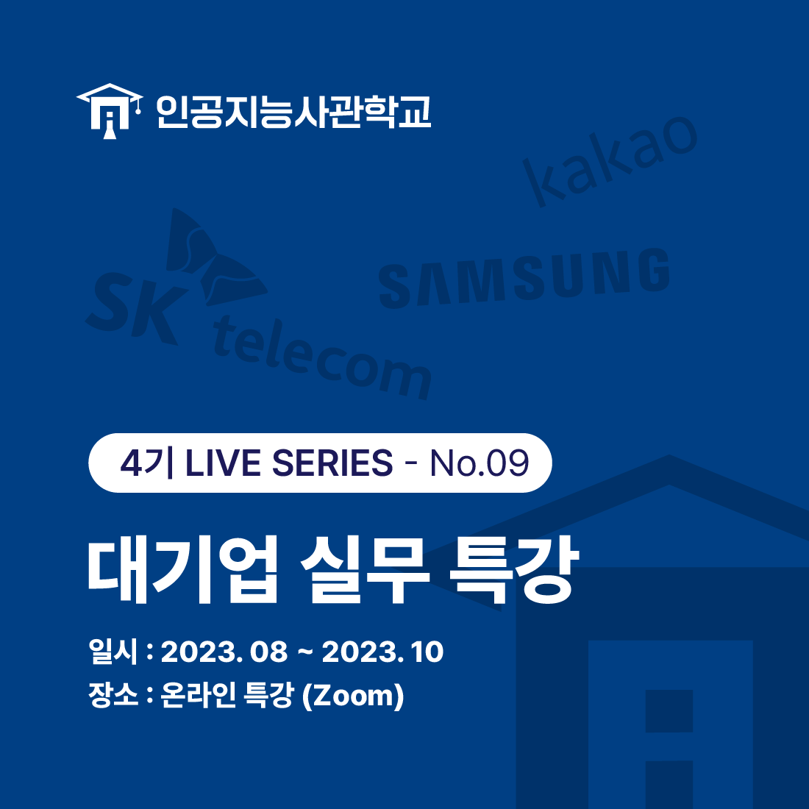
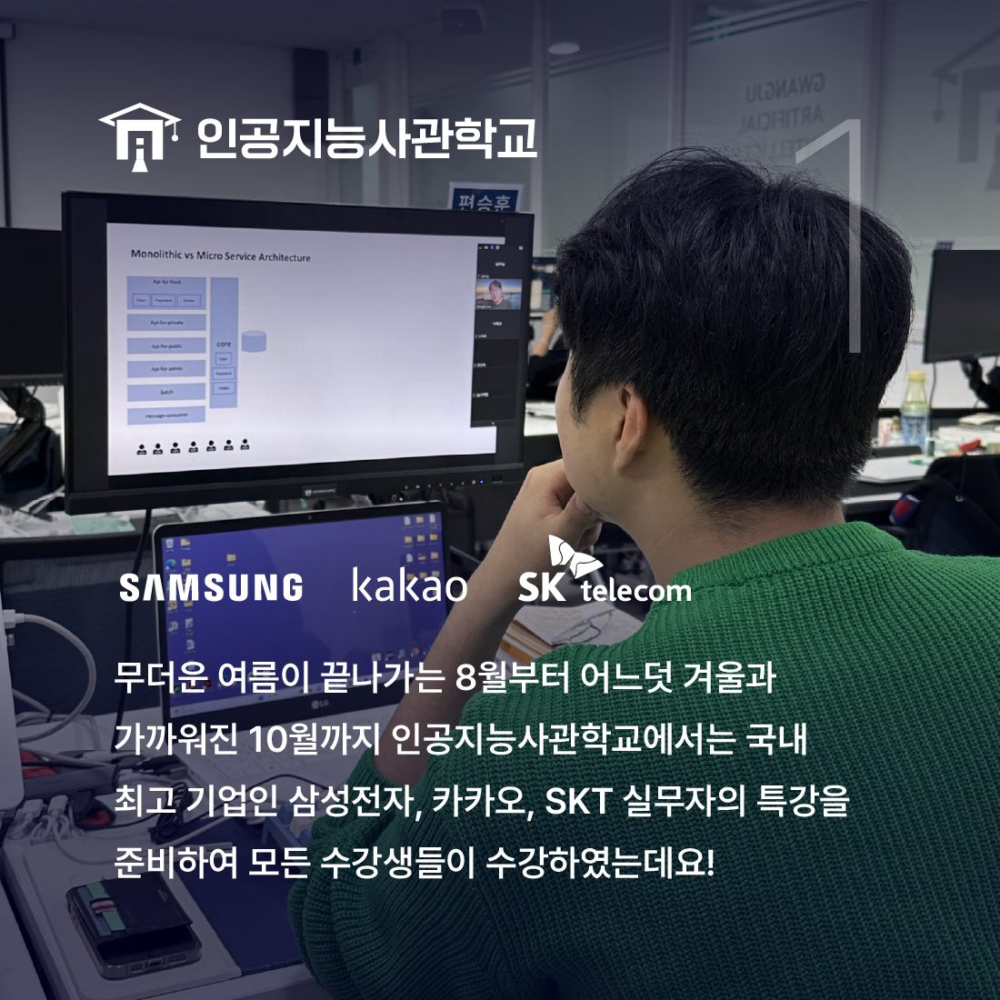
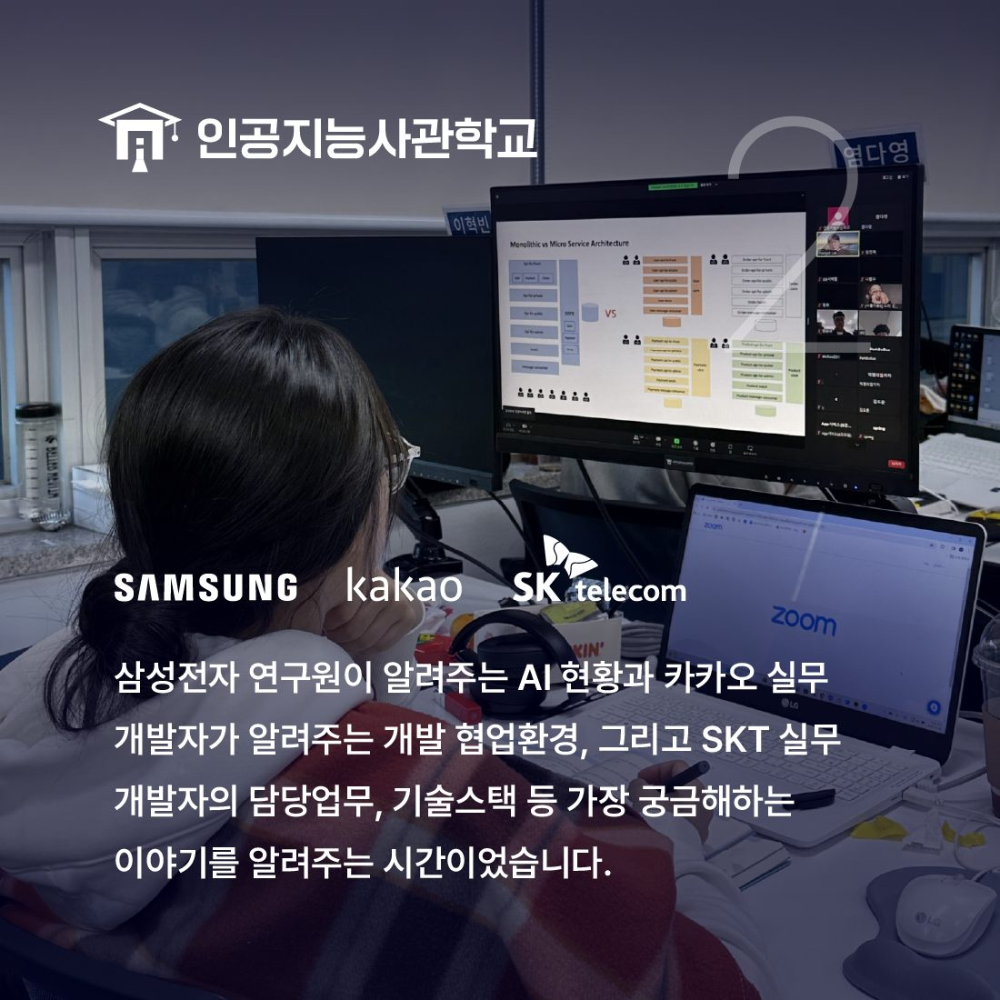

안녕하세요! 인공지능사관학교입니다. 😆

지난 8월부터 10월까지 인공지능사관학교에서는
대기업 실무진 특강이 있었습니다.

인공지능사관학교에서는
교육생들의 실무 능력 향상을 위해
다양한 기업의 실무진을 초빙해
실무 특강을 진행하고 있는데요.
이번 실무 특강은 8월부터 10월까지
전체 학생을 대상으로 총3회
온라인 환경에서 진행됐습니다.

이번 실무특강은 삼성, 카카오, SKT의 실무진이
AI 현황, 개발자의 실무 업무, 협업 환경 등에 대해
자세히 설명해주는 시간이었는데요.
교육생들에게 사전에 질문을 미리 받아
질의응답 시간도 가졌습니다.
현장에서 나온 즉석 질문 또한 받아
교육생이 강의를 들으며 생긴 궁금증도
해소할 수 있었습니다.😊

실무 특강에 참여한 교육생은 "실제 현장에서
어떻게 일하는지에 대한 궁금증이 많이 해소됐다."며
"다양한 특강을 더 많이 듣고 싶다."고 말했습니다.